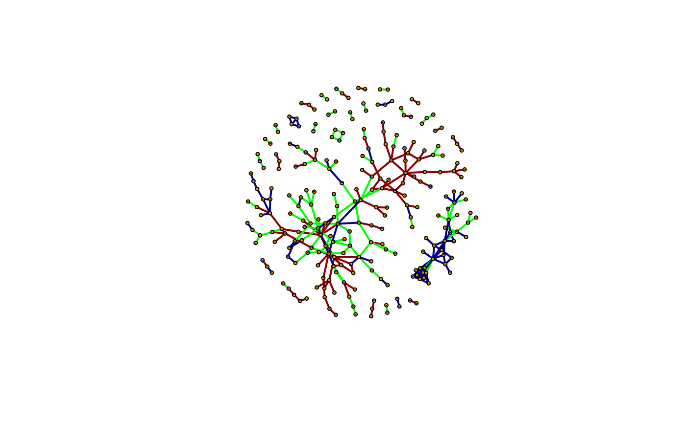

The purpose of this package is to compare the gene expression of the genes in two different conditions. The most typical case is when comparing gene expression in patients with a disease with gene expression in study participants without the disease. Hence, we may construct a network containing genes which are relevant for the development of the disease. The input data may come from different measurements of expression such as microarray, proteomics or RNA-seq as long as:
For differential gene-expression involving more than two separate conditions, consider CoDiNA (Morselli Gysi 2020) instead.
This package is hosted on Bioconductor. To install it, type:
if (!requireNamespace("BiocManager", quietly=TRUE))
install.packages("BiocManager")
BiocManager::install("csdR")Then,
should load the package into the current R session. For this vignette, we further load some auxiliary packages and set the random seed
This is a re-implementation and slight modification of the CSD algorithm presented by Voigt et al. 2017(Voigt 2017). In the first phase, the algorithm finds the co-expression between all genes within each condition using the Spearman correlation. For each pair of genes, we apply bootstrapping across the samples and compute the mean Spearman correlation \(\rho_1\) and \(\rho_2\) for the two conditions and the associated standard errors \(\sigma_1\) and \(\sigma_2\). In the second stage, the values for the two conditions are compared and gives us the following differential co-expression scores:
In this example, we are provided by two expression expression matrices from thyroid glands, sick_expression for patients with thyroid cancer and normal_expression for healthy controls. To run the CSD analysis for these two conditions, we simply do the following:
data("sick_expression")
data("normal_expression")
csd_results <- run_csd(
x_1 = sick_expression, x_2 = normal_expression,
n_it = 10, nThreads = 2L, verbose = FALSE
)After obtaining these results, we may write them to disk. However, for datasets with thousands of genes, we will get millions upon millions of gene pairs. Writing the results to disk is likely to fill up gigabytes of valuable storage space while the disk IO itself might take a considerable amount of time. Furthermore, we must reduce the information load to create meaningful results, so we better to that while the data is still in memory. We decide to select the 100 edges with highest C, S, and D-score.
pairs_to_pick <- 100L
c_filter <- partial_argsort(csd_results$cVal, pairs_to_pick)
c_frame <- csd_results[c_filter, ]
s_filter <- partial_argsort(csd_results$sVal, pairs_to_pick)
s_frame <- csd_results[s_filter, ]
d_filter <- partial_argsort(csd_results$dVal, pairs_to_pick)
d_frame <- csd_results[d_filter, ]Why does the csdR package provide a general partial_argsort function which takes in a numeric vector and spits out the indecies of the largest elements instead of a more specialized function directly extracting the top results from the dataframe? The answer is flexibility. Writing an additional line of code and a dollar sign is not that much work after all and we may want more flexible approaches such as displaying the union of the C, S- and D-edges:
csd_filter <- c_filter %>%
union(s_filter) %>%
union(d_filter)
csd_frame <- csd_results[csd_filter, ]The next logical step is to construct a network and do some analysis. This is outside the scope of this package, but we will provide some pointers for completeness. One viable approach is to use the ordinary write.table function to write the results of a file and then use an external tools such as Cytoscape to further make conclusions. Often, you may want to make an ontology enrichment of the genes.
The other option is of course to continue using R. Here, we provide an example of combining the C-, S- and D-networks and coloring the edges blue, green and red, respectively depending of where they come from.
c_network <- graph_from_data_frame(c_frame, directed = FALSE)
s_network <- graph_from_data_frame(s_frame, directed = FALSE)
d_network <- graph_from_data_frame(d_frame, directed = FALSE)
E(c_network)$edge_type <- "C"
E(s_network)$edge_type <- "S"
E(d_network)$edge_type <- "D"
combined_network <- igraph::union(c_network, s_network, d_network)
# Auxillary function for combining
# the attributes of the three networks in a proper way
join_attributes <- function(graph, attribute) {
ifelse(
test = is.na(edge_attr(graph, glue("{attribute}_1"))),
yes = ifelse(
test = is.na(edge_attr(graph, glue("{attribute}_2"))),
yes = edge_attr(graph, glue("{attribute}_3")),
no = edge_attr(graph, glue("{attribute}_2"))
),
no = edge_attr(graph, glue("{attribute}_1"))
)
}
E(combined_network)$edge_type <- join_attributes(combined_network, "edge_type")
layout <- layout_nicely(combined_network)
E(combined_network)$color <- recode(E(combined_network)$edge_type,
C = "darkblue", S = "green", D = "darkred"
)
plot(combined_network, layout = layout,
vertex.size = 3, edge.width = 2, vertex.label.cex = 0.001)
As with any bootstrap procedure the number of iterations represented by the argument n_it needs to be sufficiently large in order to get reproducible results. What this means is a matter of trial and error. In general this means that you should re-run the computations with a different random seed to see whether the number of bootstrap iterations are sufficient. Experience has shown that ~ 100 iterations might be sufficient to reproduce almost the same results in some cases, whereas in other cases, especially when the values are close, you may choose to run several thousand iterations.
For datasets with 20 000 to 30 000 genes, a considerable amount of memory is consumed during the computations. It it therefore not recommended in such cases to run CSD on your laptop or even a workstation, but rather on a compute server with several hundreds GB of RAM.
How many gene pairs to select depends on the specific needs and how big a network you want to handle. A 10 000 edge network may not be easy to visualize, but quantitative network metrics can still be extracted. Also, generating more edges than necessary usually does not make any major harm as superfluous edges can quickly be filter out afterwards. However, if you select fewer edges than you actually need, you have to re-do all calculations to increase the number.
sessionInfo()
#> R version 4.1.2 (2021-11-01)
#> Platform: x86_64-pc-linux-gnu (64-bit)
#> Running under: Ubuntu 20.04.3 LTS
#>
#> Matrix products: default
#> BLAS: /usr/lib/x86_64-linux-gnu/openblas-pthread/libblas.so.3
#> LAPACK: /usr/lib/x86_64-linux-gnu/openblas-pthread/liblapack.so.3
#>
#> locale:
#> [1] LC_CTYPE=nb_NO.UTF-8 LC_NUMERIC=C
#> [3] LC_TIME=nb_NO.UTF-8 LC_COLLATE=nb_NO.UTF-8
#> [5] LC_MONETARY=nb_NO.UTF-8 LC_MESSAGES=nb_NO.UTF-8
#> [7] LC_PAPER=nb_NO.UTF-8 LC_NAME=C
#> [9] LC_ADDRESS=C LC_TELEPHONE=C
#> [11] LC_MEASUREMENT=nb_NO.UTF-8 LC_IDENTIFICATION=C
#>
#> attached base packages:
#> [1] stats graphics grDevices utils datasets methods base
#>
#> other attached packages:
#> [1] dplyr_1.0.7 glue_1.5.0 igraph_1.2.8 magrittr_2.0.1
#> [5] csdR_1.1.0 BiocStyle_2.20.2
#>
#> loaded via a namespace (and not attached):
#> [1] bitops_1.0-7 matrixStats_0.61.0-9000 fs_1.5.0
#> [4] bit64_4.0.5 RColorBrewer_1.1-2 doParallel_1.0.16
#> [7] httr_1.4.2 rprojroot_2.0.2 GenomeInfoDb_1.28.1
#> [10] dynamicTreeCut_1.63-1 backports_1.3.0 tools_4.1.2
#> [13] bslib_0.3.1 utf8_1.2.2 R6_2.5.1
#> [16] rpart_4.1-15 Hmisc_4.5-0 DBI_1.1.1
#> [19] BiocGenerics_0.38.0 colorspace_2.0-2 nnet_7.3-16
#> [22] gridExtra_2.3 tidyselect_1.1.1 preprocessCore_1.54.0
#> [25] bit_4.0.4 compiler_4.1.2 WGCNA_1.70-3
#> [28] textshaping_0.3.5 Biobase_2.52.0 htmlTable_2.2.1
#> [31] desc_1.4.0 bookdown_0.24 sass_0.4.0
#> [34] checkmate_2.0.0 scales_1.1.1 pkgdown_1.6.1
#> [37] systemfonts_1.0.3 stringr_1.4.0 digest_0.6.28
#> [40] foreign_0.8-81 rmarkdown_2.9 XVector_0.32.0
#> [43] RhpcBLASctl_0.20-137 jpeg_0.1-8.1 base64enc_0.1-3
#> [46] pkgconfig_2.0.3 htmltools_0.5.2 highr_0.9
#> [49] fastmap_1.1.0 htmlwidgets_1.5.4 rlang_0.4.12
#> [52] impute_1.66.0 rstudioapi_0.13 RSQLite_2.2.7
#> [55] jquerylib_0.1.4 generics_0.1.1 jsonlite_1.7.2
#> [58] RCurl_1.98-1.3 GO.db_3.10.0 GenomeInfoDbData_1.2.6
#> [61] Formula_1.2-4 Matrix_1.3-4 Rcpp_1.0.7
#> [64] munsell_0.5.0 S4Vectors_0.30.0 fansi_0.5.0
#> [67] lifecycle_1.0.1 stringi_1.7.5 yaml_2.2.1
#> [70] zlibbioc_1.38.0 grid_4.1.2 blob_1.2.2
#> [73] parallel_4.1.2 crayon_1.4.2 lattice_0.20-45
#> [76] Biostrings_2.60.1 splines_4.1.2 KEGGREST_1.32.0
#> [79] knitr_1.36 pillar_1.6.4 fastcluster_1.2.3
#> [82] codetools_0.2-18 stats4_4.1.2 evaluate_0.14
#> [85] latticeExtra_0.6-29 data.table_1.14.2 BiocManager_1.30.16
#> [88] png_0.1-7 vctrs_0.3.8 foreach_1.5.1
#> [91] gtable_0.3.0 purrr_0.3.4 assertthat_0.2.1
#> [94] cachem_1.0.6 ggplot2_3.3.5 xfun_0.24
#> [97] ragg_1.1.3 survival_3.2-13 tibble_3.1.6
#> [100] iterators_1.0.13 AnnotationDbi_1.54.1 memoise_2.0.0
#> [103] IRanges_2.26.0 cluster_2.1.2 ellipsis_0.3.2